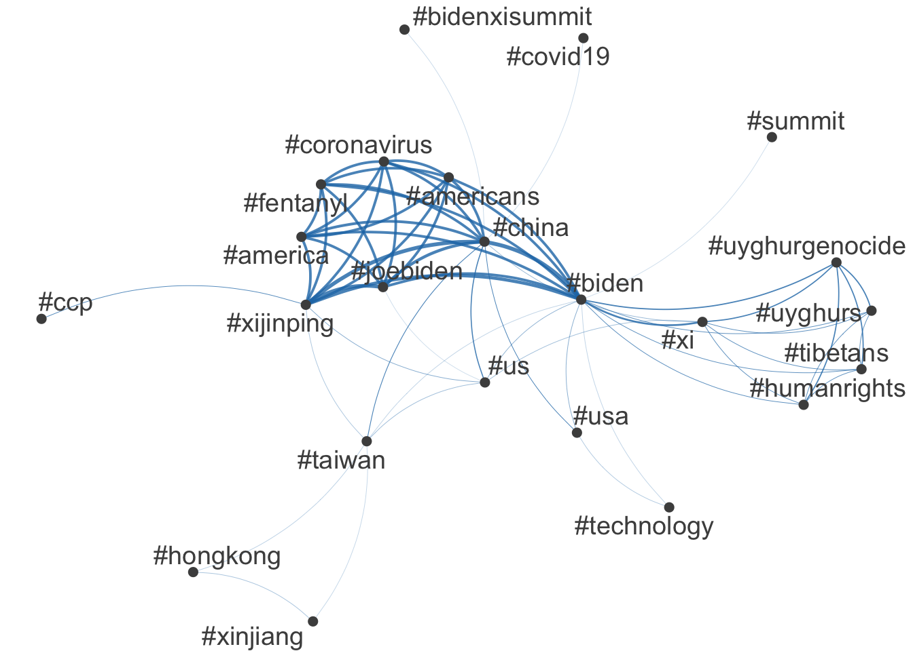
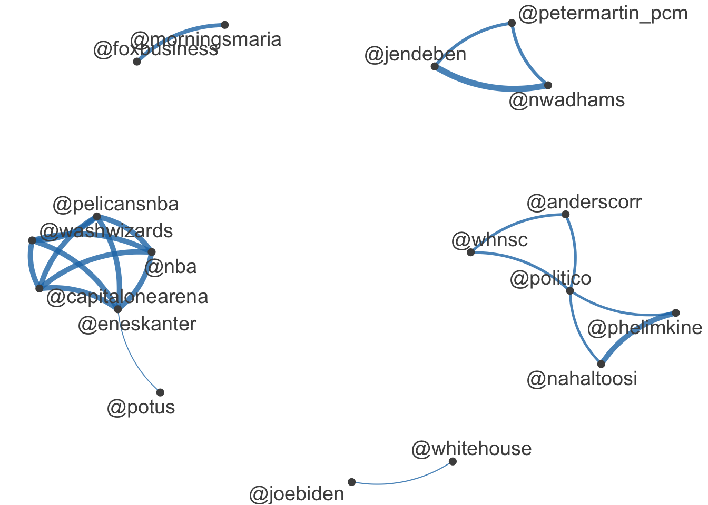

##############################################################
library(quanteda)Package version: 4.3.1
Unicode version: 14.0
ICU version: 71.1Parallel computing: disabledSee https://quanteda.io for tutorials and examples.library(quanteda.textmodels)
library(quanteda.textplots)
library(readr)
library(dplyr)
Attaching package: 'dplyr'The following objects are masked from 'package:stats':
filter, lagThe following objects are masked from 'package:base':
intersect, setdiff, setequal, unionlibrary(ggplot2)
library(stringr)
library(tibble)
library(quanteda.textstats)
# ------------------------------------------------------------
# 1. Load the data
# ------------------------------------------------------------
summit <- read_csv(
"https://raw.githubusercontent.com/datageneration/datamethods/master/textanalytics/summit_11162021.csv"
)Rows: 14520 Columns: 90── Column specification ────────────────────────────────────────────────────────
Delimiter: ","
chr (50): screen_name, text, source, reply_to_screen_name, hashtags, symbol...
dbl (26): user_id, status_id, display_text_width, reply_to_status_id, reply...
lgl (10): is_quote, is_retweet, quote_count, reply_count, ext_media_type, q...
dttm (4): created_at, quoted_created_at, retweet_created_at, account_create...
ℹ Use `spec()` to retrieve the full column specification for this data.
ℹ Specify the column types or set `show_col_types = FALSE` to quiet this message.# ------------------------------------------------------------
# 2. Improved preprocessing
# ------------------------------------------------------------
clean_tweet_text <- function(x) {
x %>%
str_replace_all("http[^\\s]+", "") %>% # URLs
str_replace_all("RT\\s+@\\w+:", "") %>% # RT flag
str_replace_all("@\\w+", "") %>% # remove @mentions (kept separately later)
str_replace_all("#", "") %>% # remove hash marks
str_replace_all("[[:punct:]]+", " ") %>% # punctuation
str_squish() %>% # collapse whitespace
tolower()
}
summit <- summit %>%
mutate(
text_clean = clean_tweet_text(text),
text_nohash = str_replace_all(text, "#", "")
)
# ------------------------------------------------------------
# 3. Tokenization and dfm creation
# ------------------------------------------------------------
toks <- tokens(
summit$text_clean,
remove_punct = TRUE,
remove_numbers = TRUE
) %>%
tokens_remove(stopwords("english")) %>%
tokens_remove(c("rt", "amp")) # common Twitter junk tokens
dfm_sum <- dfm(toks) %>%
dfm_trim(min_termfreq = 5)
# Top terms
top_terms <- topfeatures(dfm_sum, 30)
print(top_terms) biden xi summit virtual s china president jinping
15613 14263 11229 7491 7415 6369 6168 4878
chinese us monday joe hold taiwan u tensions
2762 2733 2625 2612 2301 1827 1545 1421
old friend said covid expected meeting white house
1246 1196 1113 1043 1034 929 927 924
t conflict calls told leader ahead
887 868 847 797 782 781 # ------------------------------------------------------------
# 4. LSA on TF–IDF weighted dfm
# ------------------------------------------------------------
dfm_tfidf <- dfm_tfidf(dfm_sum)
lsa_model <- textmodel_lsa(dfm_tfidf, nd = 4)
summary(lsa_model) Length Class Mode
sk 4 -none- numeric
docs 58080 -none- numeric
features 12592 -none- numeric
matrix_low_rank 45708960 -none- numeric
data 45708960 dgCMatrix S4 # Document coordinates
doc_coords <- as.data.frame(lsa_model$docs) %>%
rownames_to_column("doc_id") %>%
mutate(doc_id = as.numeric(doc_id))Warning: There was 1 warning in `mutate()`.
ℹ In argument: `doc_id = as.numeric(doc_id)`.
Caused by warning:
! NAs introduced by coercion# Add metadata (optional)
if ("user" %in% names(summit)) {
doc_coords <- doc_coords %>%
left_join(
summit %>% mutate(doc_id = row_number()) %>% select(doc_id, user),
by = "doc_id"
)
}
# ------------------------------------------------------------
# 5. Hashtag analysis (network)
# ------------------------------------------------------------
hashtags <- tokens(
summit$text,
remove_punct = FALSE
) %>%
tokens_select("#*", selection = "keep") %>%
dfm()
top_hashtags <- topfeatures(hashtags, 30)
print(top_hashtags) #china #biden #xijinping #joebiden #america
790 691 640 447 308
#americans #coronavirus #fentanyl #xi #us
296 295 295 225 160
#uyghurgenocide #taiwan #foxnews #usa #breaking
152 149 144 111 103
#news #ccp #humanrights #uyghurs #tibetans
86 84 77 73 67
#bidenxisummit #summit #hongkong #updates #covid19
50 46 43 40 38
#xinjiang #politics # #exclusive #technology
37 36 33 29 29 tag_fcm <- fcm(hashtags)
top_tagnames <- names(top_hashtags)
tag_fcm_sel <- fcm_select(tag_fcm, pattern = top_tagnames)
textplot_network(
tag_fcm_sel,
min_freq = 20,
edge_alpha = 0.8,
edge_size = 1
)
# ------------------------------------------------------------
# 6. User mention network (@users)
# ------------------------------------------------------------
user_tokens <- tokens(
summit$text,
remove_punct = FALSE
) %>%
tokens_select("@*", selection = "keep")
user_dfm <- dfm(user_tokens)
top_users <- topfeatures(user_dfm, 30)
user_fcm <- fcm(user_dfm)
user_fcm_sel <- fcm_select(user_fcm, names(top_users))
textplot_network(
user_fcm_sel,
min_freq = 10,
edge_alpha = 0.8
)
# ------------------------------------------------------------
# 7. Save output files
# ------------------------------------------------------------
save_path <- "/Users/bepi36/Library/CloudStorage/OneDrive-TheUniversityofTexasatDallas/UTD/Fall2025/Data collection/assignment_6/"
write_rds(dfm_sum, paste0(save_path, "dfm_summit.rds"))
write_csv(doc_coords, paste0(save_path, "lsa_document_coords.csv"))
message("Files saved successfully to:")Files saved successfully to:message(save_path)/Users/bepi36/Library/CloudStorage/OneDrive-TheUniversityofTexasatDallas/UTD/Fall2025/Data collection/assignment_6/##############################################################